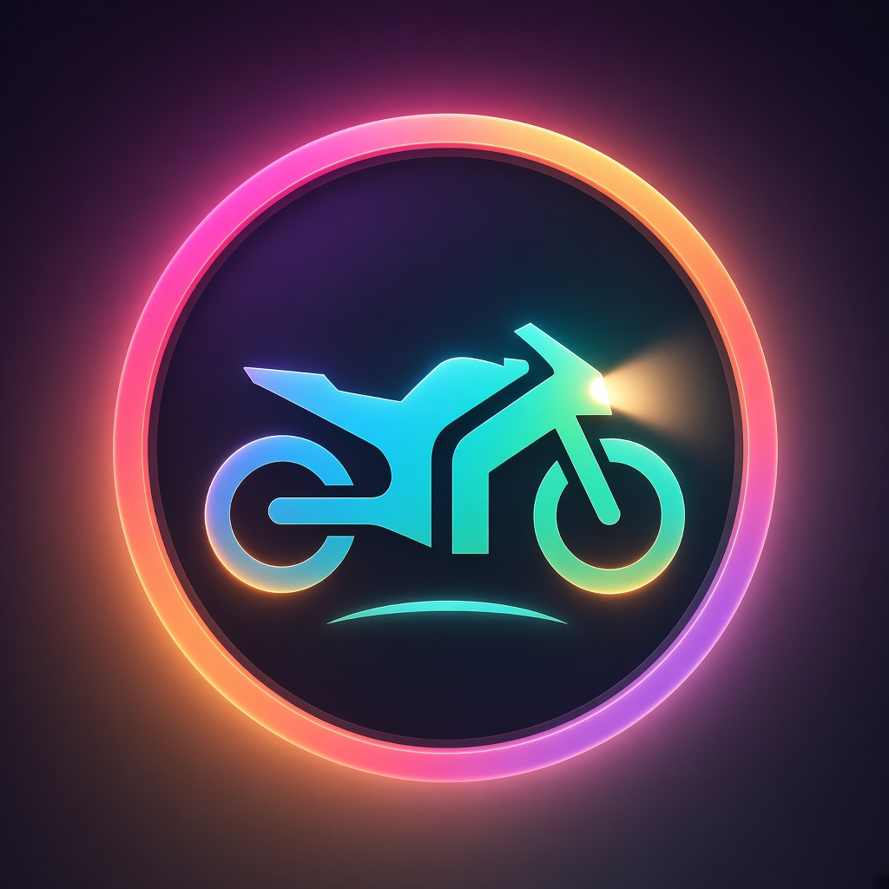
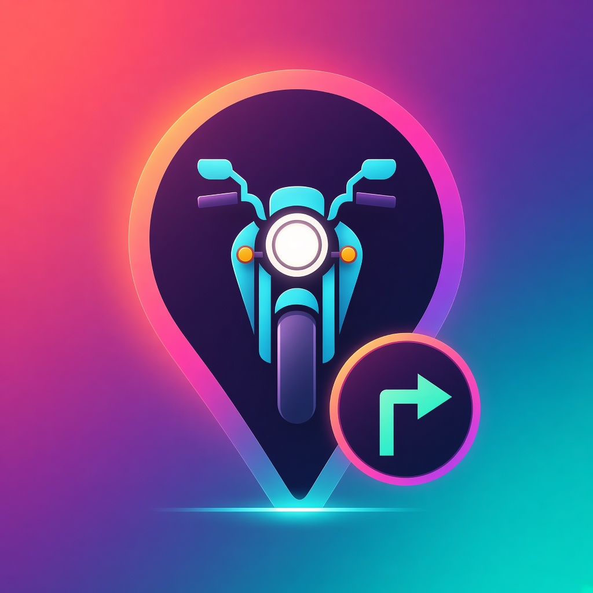
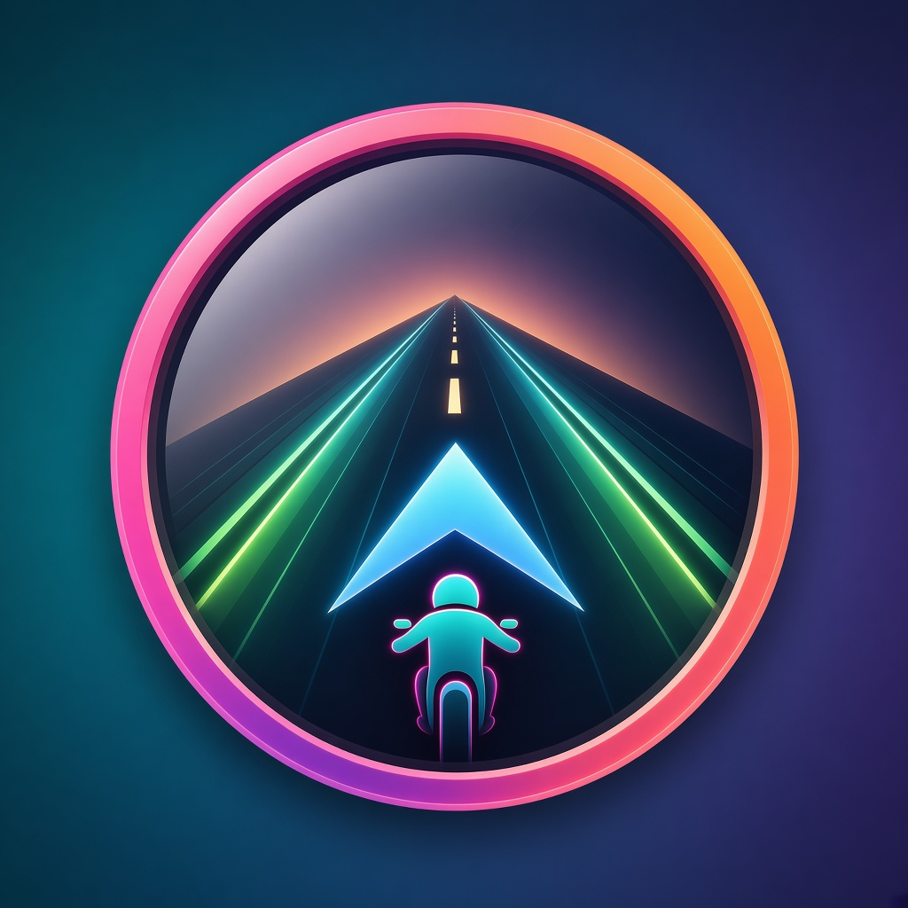

方案 A · v2
圆屏仪表 · 暮光表圈

表圈橙→粉→紫；车身青→薄荷；车灯暖白。暮光紫底代替纯黑。
- 暖环 × 冷车对比拉开层次
- 仍靠粉环保住圆屏识别
结构不变，拉开色阶：在品牌粉×青之外加入珊瑚橙、紫罗兰、薄荷绿与暮光暖光，避免「粉环+青箭头」两色单调。
双色 neon：粉环 + 青箭头。圆屏有暗示，但色板偏单一。

表圈橙→粉→紫；车身青→薄荷；车灯暖白。暮光紫底代替纯黑。

底：珊瑚→粉→紫→青。针缘粉橙，车身青白 + 琥珀转向灯，徽章紫粉环。

表圈粉→橘；地平线琥珀暖光；车道青柠光轨；骑手青身粉描边。
配色 v2 预览，尚未替换 AppIcon。选定后导出 1024×1024 入库。